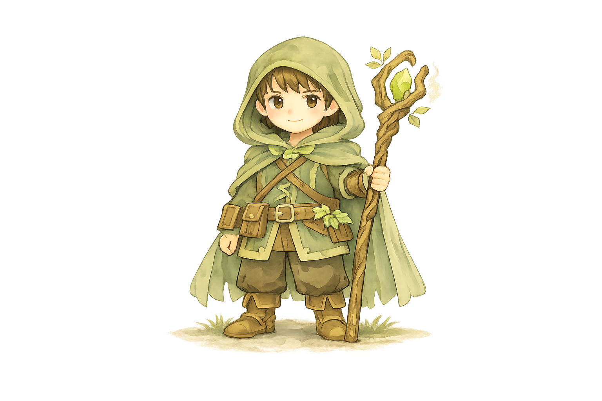
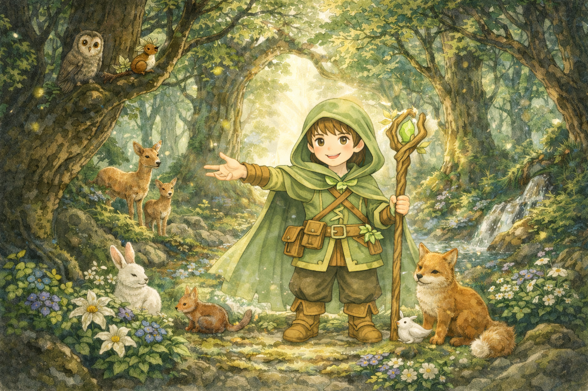

The Forest Keeper

安心と安定が第一。波風を立てず、昨日と同じ今日が続くことを望む。
変化は脅威であり、慣れ親しんだ環境や関係性を死守しようとする。

安心と安定が第一。波風を立てず、昨日と同じ今日が続くことを望む。変化は脅威であり、慣れ親しんだ環境や関係性を死守しようとする。
協調性、継続力、安心感、平和主義
事なかれ主義、決断の先送り、主体性の欠如、変化への恐怖
あなたは「今ある場所」を維持することに全力を注いできました。 嵐が来てもじっと耐え、動かないことで平穏を守り続けてきた人です。その存在は、多くの人に安心感を与えてきたでしょう。 しかしその結果、あなた自身はその役割に縛られ、変化することを恐れ、同じ場所から一歩も動けなくなってはいないでしょうか。 周囲の安心は、あなたの「停止」によって支えられている。その事実が、あなたを静かに疲弊させている可能性もあります。
安定志向（変化より継続）／リスク回避（失敗を避ける）／調和重視（衝突を好まない）／慎重判断（動くまで時間がかかる）
過去の変化によって、大切なものを失ったトラウマはありませんか。 環境が変わったことで、人間関係や居場所、役割が一気に崩れ去った経験。 その痛みは、「変わること」そのものを危険なものとして、あなたの記憶に深く刻み込んだはずです。 あるいは、特定のコミュニティに属したことで初めて「ここにいていいんだ」という、深い安心感を得た記憶。 その居場所を失う恐怖と執着が、あなたを変化を拒む番人へと仕立て上げました。 守ることは安定をもたらしますが、同時に、あなた自身の時間を止めてしまうこともあります。
「未知への冒険と、健全な摩擦」 一人で知らない土地へ行くことや、あえて周囲と異なる意見を言って議論すること。安定した地位を捨てて新しい何かに挑戦し、嫌われるリスクを取ること。あなたは「予測できない事態」を避けるあまり、人生の鮮やかな躍動感を逃してきたのかもしれません。
変わらないためにこそ、変わる勇気を持つ必要があります。 あなたが守り続けてきた存在は尊いものですが、外の世界を知らないままでは、やがて息苦しくなってしまいます。 番人という役割を一度降り、責任や立場を背負わない「ただの旅人」として歩いてみること。 そこで見聞きする風景や人との出会いが、あなたの守ってきた場所に新しい意味と深みを与えてくれます。 その往復こそが、あなたの人生を静かに再生させていく道になります。
通勤ルートを変えるか、入ったことのない店に入ってください。日常の小さなルーチンを、自分自身の手で壊してみてください。最初は強い不安を感じるかもしれませんが、世界はあなたが思うよりもずっと安全で、変化は怖くないということを、身体感覚で知ることが大切です。